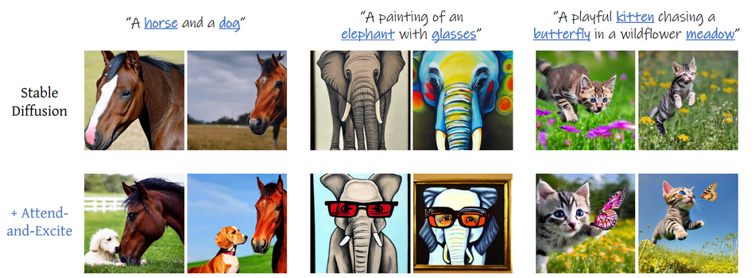
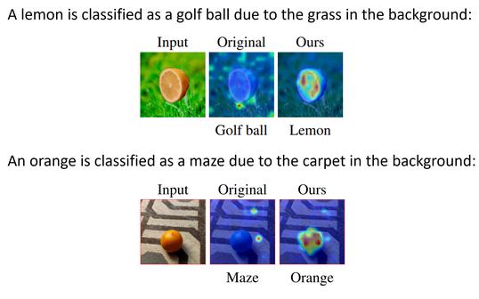
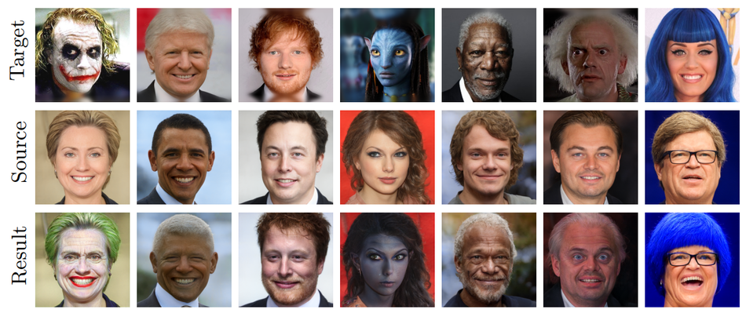
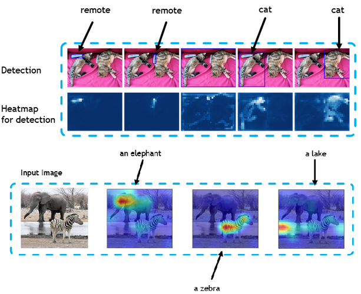
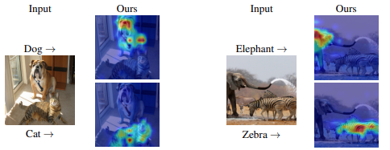

Selected publications
* denotes equal contribution
VideoJAM: Joint Appearance-Motion Representations for Enhanced Motion Generation in Video Models
International Conference on Machine Learning (ICML), 2025, Spotlight (top 2.6%)
Still-Moving: Customized Video Generation without Customized Video Data
SIGGRAPH Asia (Journal), 2024
The Hidden Language of Diffusion Models
International Conference on Learning Representations (ICLR), 2024

Attend-and-Excite: Attention-Based Semantic Guidance for Text-to-Image Diffusion Models
SIGGRAPH (Journal), 2023

Optimizing Relevance Maps of Vision Transformers Improves Robustness
Neural Information Processing Systems (NeurIPS), 2022

Image-Based Clip-Guided Essence Transfer
European Conference on Computer Vision (ECCV), 2022

Generic Attention-model Explainability for Interpreting Bi-Modal and Encoder-Decoder Transformers
International Conference on Computer Vision (ICCV), 2021 Oral presentation (top 3%)

Transformer Interpretability Beyond Attention Visualization
Computer Vision and Pattern Recognition (CVPR), 2021

For a complete list of publications, please visit my Google Scholar profile.